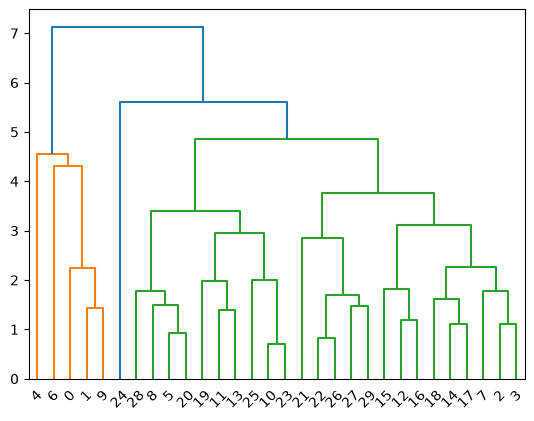

Clustering#
This module has a single function, used to help visualize a dendrogram from a hierarchical clustering. The function is based on this example from sklearn.cluster.
import numpy as np
from sklearn.cluster import AgglomerativeClustering
from scipy.cluster.hierarchy import dendrogram
from ISLP.cluster import compute_linkage
Make a toy dataset#
rng = np.random.default_rng(1)
X = rng.normal(size=(30, 5))
X[:10] += 1
Cluster it#
clust = AgglomerativeClustering(distance_threshold=0,
n_clusters=None,
linkage='complete')
clust.fit(X)
AgglomerativeClustering(distance_threshold=0, linkage='complete',
n_clusters=None)In a Jupyter environment, please rerun this cell to show the HTML representation or trust the notebook. On GitHub, the HTML representation is unable to render, please try loading this page with nbviewer.org.
Parameters
Fitted attributes
Plot the dendrogram#
linkage = compute_linkage(clust)
dendrogram(linkage);
